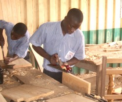
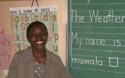
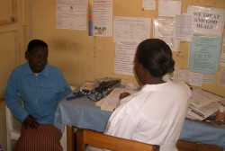
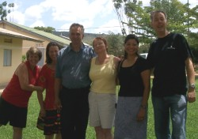
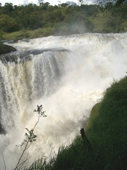
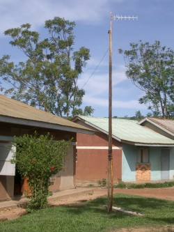

November 2004
Bram Moolenaar, treasurer of ICCF Holland, visited the Kibaale Children's
Centre in November 2004. This is his report.
Boring?
More of the same - that could be the boring summary of my trip; but this
actually means things are going very well. Quite often a project in Africa
goes down the hill after a few years of success, so a childrens centre that
started over ten years ago and continues to grow can be regarded a remarkable
achievement.
I made quite a few pictures during my visit.
Click on the images below for an enlargement.
You can find more pictures here.
School
The school has added two more classes: one for primary and one for secondary.
Within a few years there will be two classes at every level. A block with two
new classrooms has been built. The vocational school, which teaches tailoring,
carpentry and building, continues to run well. The carpentry students were
busy making furniture for the new secondary library and study room. It is a
good example of how the children learn a useful profession, and we save money
at the same time! There is a total of about seven hundred children in school
now. While I was there the P7 group was writing their exams. To help the
children do their studies properly they were allowed to sleep at the school,
so that they could study in the evening by the light provided by the
generator.
Forty-four children in S4 were taking their last exams: Biology and Swahili.
This is the final class for them at the project; after the results have
arrived they will have to decide what to do next. We hope that many of them
can continue in advanced level, teacher training or something like that, but
that is expensive. It is not only the cost of the school; they also need to
pay for boarding, since the distance to their homes is too great. They can
only undertake this level of education when a sponsor offers to pay for most of
the costs.
The special needs class is a remarkable group. There are five children who
are deaf, and five children with mental disabilities. I talked to their
teacher, Judith. She finds it a challenge to teach these children, since it
takes a lot of time before they understand something. The progress they make
and the smile on their faces is her reward. These children are not sponsored
yet, and the staff required causes the cost to be relatively high. But we
do want to continue to help these children.
|
|
|

Boys in carpentry class making chairs for the new library.

Judith, teacher for the special needs class.
|

Nurse Annet talking to a patient in the clinic; note the sign in the right
upper corner
|
|
|
Clinic
The clinic was busy as ever. On Monday morning, when the doctor arrived, the
patients quickly lined up to await their consultation. This went on for the
whole day; the doctor only went home when it was getting dark. Fortunately, the
government now provides us with some of the standard medicine. Treatment for
less common problems still needs to be paid for by us and is sometimes
very expensive. Half of the one-time donations is used to cover this.
|
Staff
The foreign volunteers at KCC currently number five. Jackie Ammeter is the
director for almost five years now; she understands the local people very
well and knows how to deal with the problems that are encountered every day.
Kenny Corpeno takes care of the sponsorship administration. All the letters
to and from sponsors go through her. She also handles special requests from
needy children, for example when they run out of food. That happened often
this year, because of a serious drought. I am glad I met Kenny and hope to
continue working with her. Margaret Kolthammer takes care of the school
administration. Sandi and Earl help Jackie with whatever needs to be done. A
nice team, I am grateful for their hospitality and company during my visit.
There is a large number (about eighty) of Ugandan staff at the project - too
many to get to know more than a few. Some of the veterans are the site
manager Patrick, his wife and teacher Ellen, the child assistant Cephas, the
cook Bira and headmaster Peter. It is good to see that many things are taken
care of by Ugandans and that their experience grows. They form a good team to
keep the project running. That they work well together can be observed by the
growing number of married couples :-).
|
|
|

Volenteers: Jackie, Margaret, Earl, Sandi, Kenny (and me)
|

Murchison Falls
|
|
|
Problems
Is there nothing negative to mention? Well, not on a big scale. But there
are small problems that keep coming back, such as girls in school getting
pregnant and guardians abusing children. Even though many attempts are made
to avoid this, it still happens. I think we can only continue to try hard to
educate the people about these issues, so that the number of cases goes down.
Nature
In the past years my time in Uganda was limited and I could only visit the
project. Fortunately, this time I managed to make a weekend trip to Murchison
Falls national park, a very nice nature reserve. Farming is prohibited in
this area and the wild animals have priority. I saw elephants,
giraffes, many birds and even lions. The center of the park is an impressive
waterfall in the river Nile. The water falls fifty meters with so much
power that it makes the rocks shake. It shows what a beautiful country Uganda
is.
|
Communication
As a special task on this trip I wanted to improve the communication
facilities. That has always been a problem, since internet and fax is only
available in the city. Answering a simple question often takes weeks. There
is a GSM network in the region, but the signal at the project site is very weak. I
brought a specific phone, antennas and cables with me for experiments.
Unfortunately, the phone died before I could do any measurements. It took a
week to find out that it could not be repaired. I managed to obtain a
replacement phone in the city, but that one didn't work with the antennas.
That was very frustrating, but then I got lucky: the village phone that was
ordered months ago finally arrived two days before my trip ended - and the
antenna plugs it uses fit the cables that I brought. Walking around with this
setup, an antenna on a pole and pointing it in all directions, I managed to
find a few spots with good signal. As a result it is now possible to use a
mobile phone at the project without having to climb a hill. The next step is
to setup e-mail. Since I didn't have a data cable for this phone I couldn't
do that this trip. Also, a data connection is only possible for post-paid and
we need to reserve budget for it. Hopefully we will manage to find money and
make e-mail work soon.
|
|
|

GSM antenna near the office
|
Conclusion
I had a very good time in Uganda and was pleased to see to the project is
running well. More and more children profit from our work and help. I am
already looking forward to my next trip!
Bram Moolenaar
more pictures
top
|

{kind=link}
{kind=link}
{kind=link}
{kind=link}
{kind=link}
{kind=link}